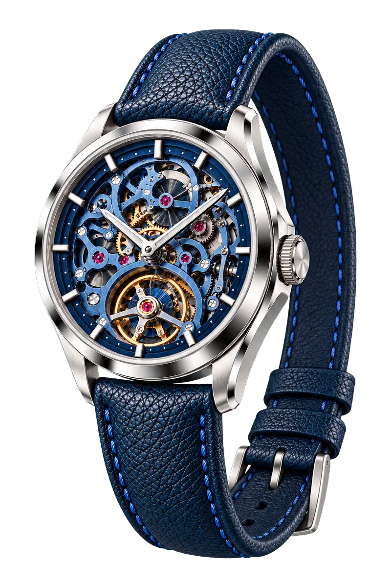
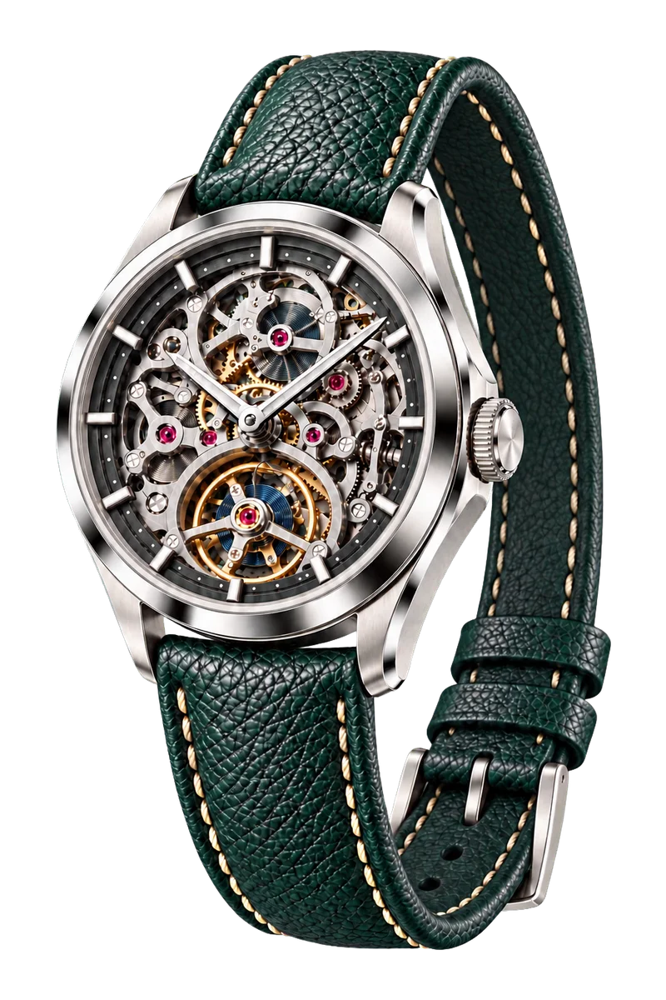
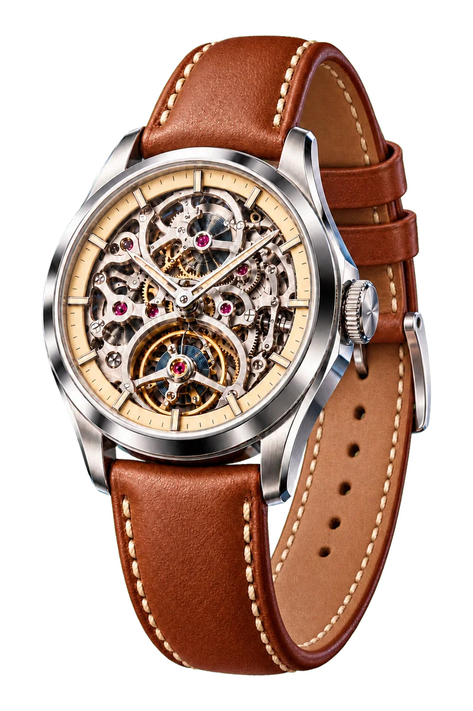
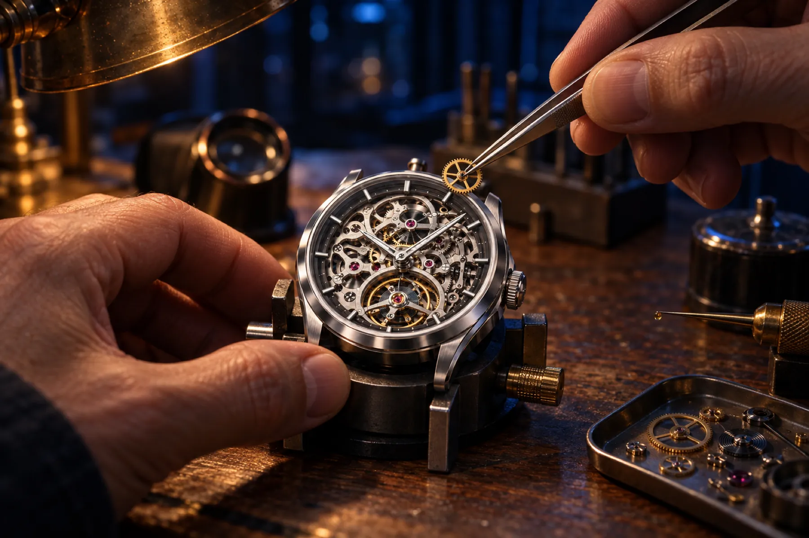
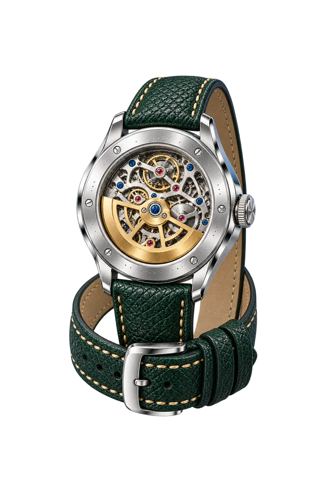

PonteiroAlto
Um relógio automático com 72 horas de reserva. Você tira à noite e ele ainda marca a hora na segunda.
Dá para vero tempo passar.
O mostrador é vazado: pelo vidro aparece o calibre inteiro trabalhando.
Oito batidaspor segundo.
O balanço vai e volta 691.200 vezes por dia. É ele que divide o segundo.
186 peças.Montadas à mão.
72 horasde reserva.
Você tira na sexta à noite e ele ainda marca a hora na segunda.
Aço 316L · 40 mm · Safira · 50 m
R$14.800
Reservar o meuUm calibre. Três noites.



NoiteMusgoAreia

Um relojoeiro só,do começo ao fim.
Vinte e um dias na bancada, nas mãos da mesma pessoa. O nome de quem montou vai gravado no fundo.

Dez anosde garantia.
E revisão pela vida toda, feita por quem montou.
Por trás do balcão,um sistema que lembra.
Esta página é a vitrine. O que eu vendo para a loja é o que vem agora: o sistema que acompanha cada cliente, do anúncio à troca da bateria. Teste à vontade.
Do anúncio à troca da bateria, a loja não esquece nenhum cliente
Um relógio não é venda de uma vez só: tem ajuste de pulseira, bateria, revisão e presente de aniversário. Avance o ponteiro e veja o que o sistema faz sozinho em cada momento.
Conversa com
Toque em "Avançar o ponteiro" para começar pelo anúncio.
Atendimento que recomenda o modelo certo
Três perguntas filtram o catálogo pelo uso, pelo orçamento e pelo estilo. O modelo escolhido passa a aparecer nas mensagens do ciclo.
Regras que o lojista liga e desliga
Mensagens de serviço, como confirmação de compra, saem sempre. As de relacionamento só saem com a autorização do cliente, um cuidado com a LGPD.
Quanto trabalho manual isso substitui
Coloque os números da sua loja. A conta usa só o que está ligado na lista de regras e não é promessa de venda.
mensagens por venda ligadas, mensagens por mês e cerca de de digitação a menos.
Como isto funciona
Nesta demonstração
Tudo roda no seu navegador, em JavaScript puro. O ciclo é uma lista de 12 eventos, e cada evento consulta duas condições antes de gerar a mensagem: a regra está ligada? O tipo da mensagem permite envio sem autorização?
As regras e a autorização ficam guardadas no próprio aparelho. Nada sai dele.
Na versão de verdade
Liga com a sua loja virtual e com a API oficial do WhatsApp, usa um banco de dados com acesso restrito e guarda quando cada cliente autorizou ou cancelou. Dados pessoais trafegam por HTTPS e ficam criptografados no banco.
Funciona para outros nichos: basta trocar o catálogo, as perguntas e o calendário de eventos. Em uma ótica, por exemplo, o lembrete vira a revisão do grau.
Venha darcorda.
O ateliê recebe com hora marcada, de terça a sábado. Loja fictícia: nada é enviado.
O sistemaAtendimentoVoltar ao topoSite de demonstração · Marca fictícia